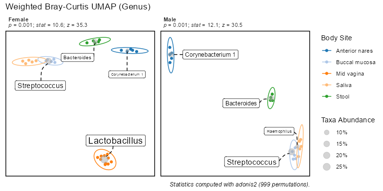
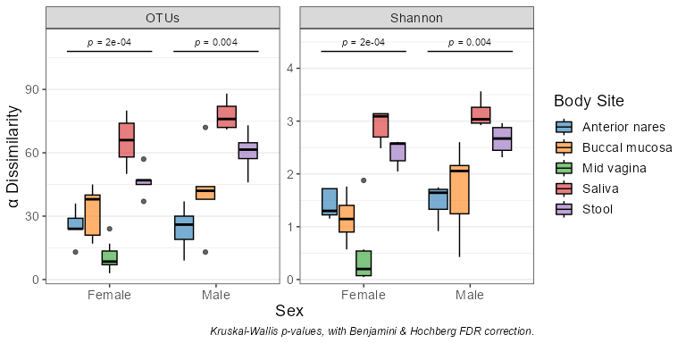
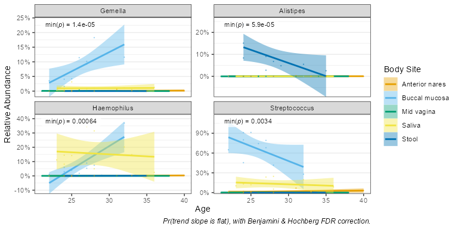
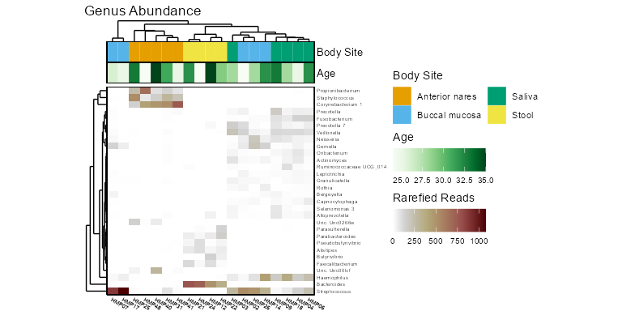
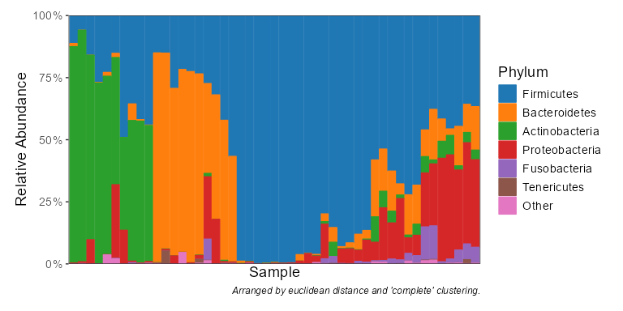

This package is a toolkit for working with Biological Observation Matrix (BIOM) files. Features include reading/writing all ‘BIOM’ formats, rarefaction, alpha diversity, beta diversity (including ‘UniFrac’), summarizing counts by taxonomic level, subsetting, visualizations, and statistical analysis. All CPU intensive operations are written in C.
Reference material is available online at https://cmmr.github.io/rbiom/index.html
Source code can be found at https://github.com/cmmr/rbiom
Installation
The latest stable version can be installed from CRAN.
install.packages("rbiom")The development version is available on GitHub.
install.packages("remotes")
remotes::install_github("cmmr/rbiom")Usage
Import and rarefy abundance counts.
library(rbiom)
infile <- system.file(package = "rbiom", "extdata", "hmp50.bz2")
biom <- rarefy(infile)Explore associations with metadata.
bdiv_ord_plot(biom, color.by = "Body Site", facet.by = "Sex")
adiv_boxplot(biom, x = "Sex", adiv = c("otu", "shan"), color.by = "Body Site")
Compute statistics for correlation models.
taxa_corrplot(biom, x = "Age", layers = "stc", taxa = .01, p.top = 4, color.by = "bod")
taxa_stats(biom, regr = "Age", stat.by = "Body Site", taxa = 0.01)
#> # Test: Estimated marginal means of linear trends.
#> # Model: stats::lm(.abundance ~ Age * `Body Site`)
#> # A tibble: 80 × 10
#> .taxa `Body Site` .trend .se .df .lower .upper .t.ratio .p.val .adj.p
#> <fct> <fct> <dbl> <dbl> <dbl> <dbl> <dbl> <dbl> <dbl> <dbl>
#> 1 Gemella Buccal muc… 15.5 2.45 39 10.6 20.4 6.34 1.76e-7 1.41e-5
#> 2 Alisti… Stool -14.1 2.49 39 -19.2 -9.10 -5.68 1.46e-6 5.86e-5
#> 3 Haemop… Buccal muc… 38.2 7.97 39 22.1 54.3 4.79 2.40e-5 6.40e-4
#> 4 Strept… Buccal muc… -53.3 12.8 39 -79.2 -27.3 -4.16 1.71e-4 3.43e-3
#> 5 Shuttl… Mid vagina 16.7 4.27 39 8.11 25.4 3.92 3.43e-4 5.49e-3
#> 6 Lactob… Mid vagina -31.3 8.42 39 -48.4 -14.3 -3.72 6.19e-4 8.26e-3
#> 7 Veillo… Saliva -10.8 3.09 39 -17.0 -4.52 -3.49 1.23e-3 1.40e-2
#> 8 Prevot… Saliva 5.23 1.69 39 1.82 8.65 3.10 3.58e-3 3.58e-2
#> 9 Neisse… Saliva 9.70 3.42 39 2.78 16.6 2.83 7.23e-3 6.43e-2
#> 10 Fusoba… Saliva 4.95 1.82 39 1.27 8.64 2.72 9.69e-3 7.75e-2
#> # ℹ 70 more rowsSummarize counts by taxonomic rank.
taxa_heatmap(biom, taxa = 30, color.by = c("body", "age"), limit.by = c(sex = "Male"))
taxa_barplot(biom, rank = "Phylum")
taxa_table(biom, 'Phylum')
#> # A tibble: 637 × 8
#> .rank .sample .taxa .abundance Age BMI `Body Site` Sex
#> <fct> <chr> <fct> <dbl> <dbl> <dbl> <fct> <fct>
#> 1 Phylum HMP01 Actinobacteria 13 22 20 Buccal mucosa Fema…
#> 2 Phylum HMP01 Bacteroidetes 192 22 20 Buccal mucosa Fema…
#> 3 Phylum HMP01 Cyanobacteria 0 22 20 Buccal mucosa Fema…
#> 4 Phylum HMP01 Deinococcus Thermus 0 22 20 Buccal mucosa Fema…
#> 5 Phylum HMP01 Firmicutes 854 22 20 Buccal mucosa Fema…
#> 6 Phylum HMP01 Fusobacteria 37 22 20 Buccal mucosa Fema…
#> 7 Phylum HMP01 Gracilibacteria 13 22 20 Buccal mucosa Fema…
#> 8 Phylum HMP01 Proteobacteria 74 22 20 Buccal mucosa Fema…
#> 9 Phylum HMP01 Saccharibacteria 0 22 20 Buccal mucosa Fema…
#> 10 Phylum HMP01 Spirochaetae 0 22 20 Buccal mucosa Fema…
#> # ℹ 627 more rowsParallel Processing
Computation of beta diversity metrics (UniFrac, Bray-Curtis, etc) will use all available CPU cores by default. To limit the number of cores used, you can set the numThreads option:
RcppParallel::setThreadOptions(numThreads = 4)Building from source
rbiom requires the following system libraries which can be installed through your operating system’s package manager.
- deb (Debian, Ubuntu):
libudunits2-dev libssl-dev libxml2-dev libcurl4-openssl-dev libgdal-dev - rpm (Fedora, CentOS, RHEL):
udunits2-devel openssl-devel libxml2-devel libcurl-devel gdal-devel - csw (Solaris):
libssl_dev openssl@1.1 libxml2_dev gdal_dev - brew (OSX):
udunits